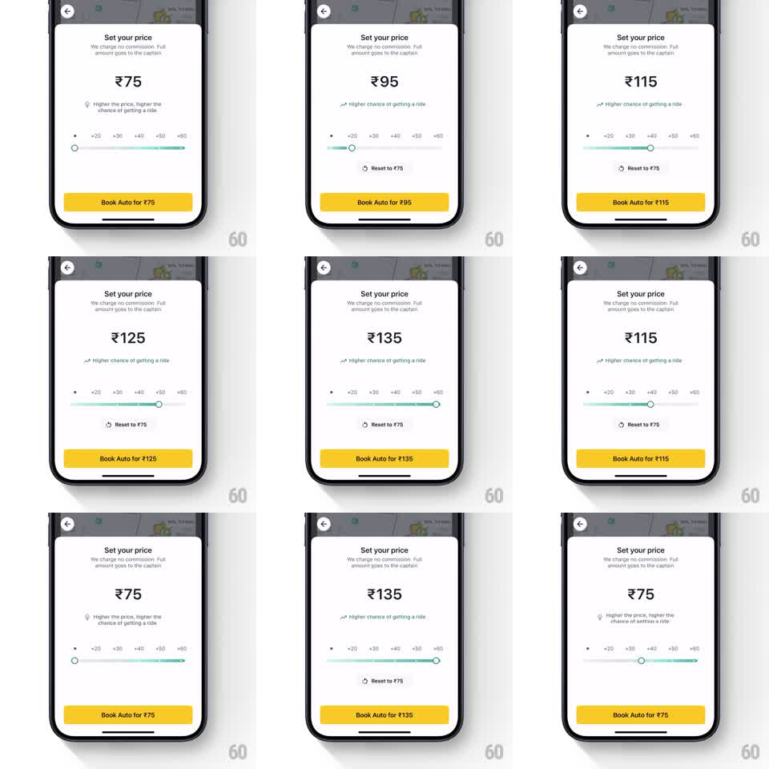

Media
Frame-by-frame

Rebuild this interaction 1:1: Rapido's set-your-price sheet - a stepped fare slider where dragging snaps through +20 increments, the big rupee readout and the Book button's label update live, and a reset link springs the price back to base.

Rebuild this interaction 1:1: Rapido's set-your-price sheet - a stepped fare slider where dragging snaps through +20 increments, the big rupee readout and the Book button's label update live, and a reset link springs the price back to base.
## Integration
Integration: stack-agnostic spec - springs given as stiffness/damping, timed motions as duration + curve; map every value to your framework and animation library of choice.
## Scene
A white bottom sheet over the ride map (back chevron top-left). Title "Set your price", subline "We charge no commission. Full amount goes to the captain", a huge centered fare ("₹75"), a hint line that flips between "Higher the price, higher the chance of getting a ride" and "Higher chance of getting a ride" with a small up-right arrow, a horizontal slider with tick labels (+20 +30 +40 +50 +60) and a teal fill, a "Reset to ₹75" link, and a yellow "Book Auto for ₹75" button.
## Motion spec
Pattern: stepped price slider with live fare readout.
- Dragging the slider knob moves it 1:1; the teal fill tracks the knob; the fare readout and the button label update live as each step is crossed (₹75 -> ₹95 -> ₹115 -> ₹125 -> ₹135).
- Release: the knob snaps to the nearest step (spring ~320/18, one small overshoot) with a tick haptic per step passed.
- The fare numeral crossfades on each step change (120ms, old value up and out, new in).
- The hint line swaps its copy and arrow at the first step above base (150ms crossfade).
- "Reset to ₹75" fades in once the price leaves base (200ms); tapping it springs the knob back to zero (spring ~300/20) with the readout ticking down through the steps.
- The Book button's label updates live with the fare and presses with a 0.97 scale.
## Calibration
- Steps, not continuous: the knob never rests between ticks.
- The button label and the big readout must always agree - same value in the same frame.
## Reduced motion
Knob jumps to the selected step (150ms fill redraw); readout crossfades.
## Don't miss
- The map stays visible (dimmed) behind the sheet - this is a sheet, not a page.
- Yellow button, teal fill: Rapido's two brand colors, exactly placed.